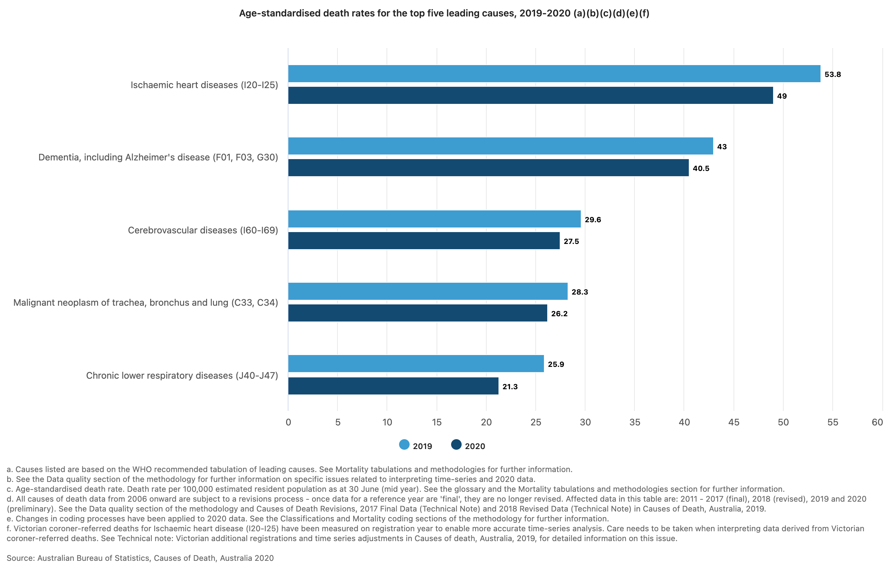
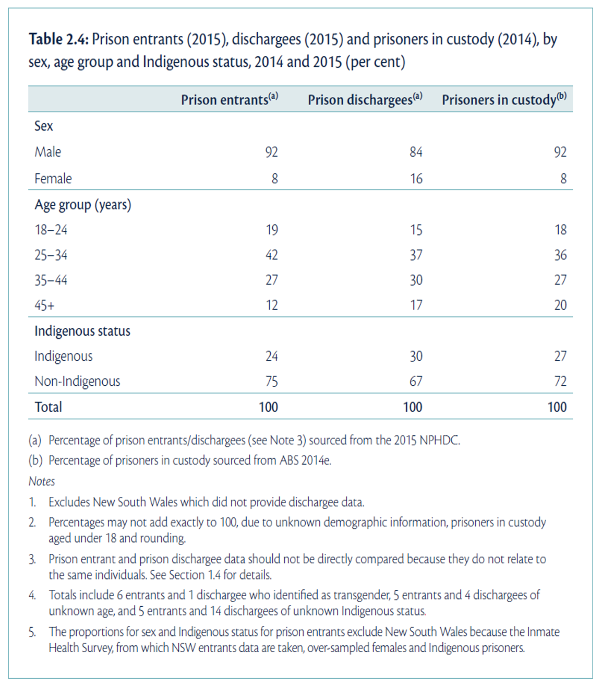
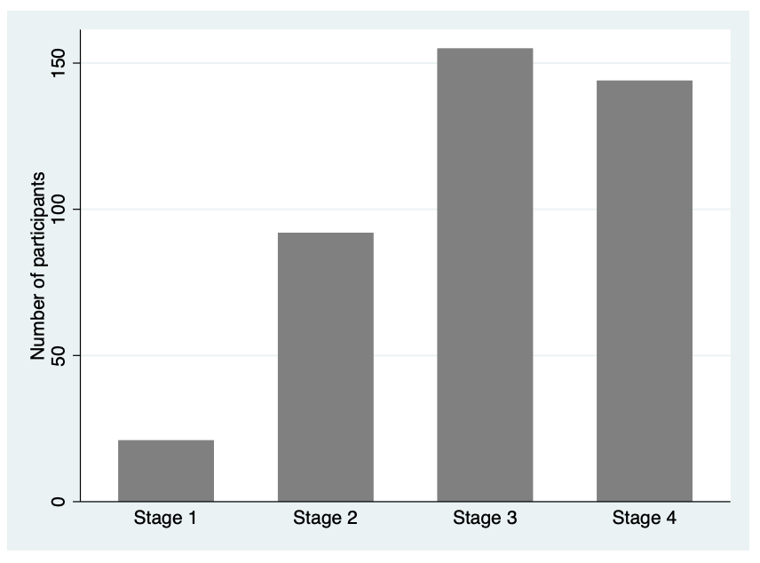
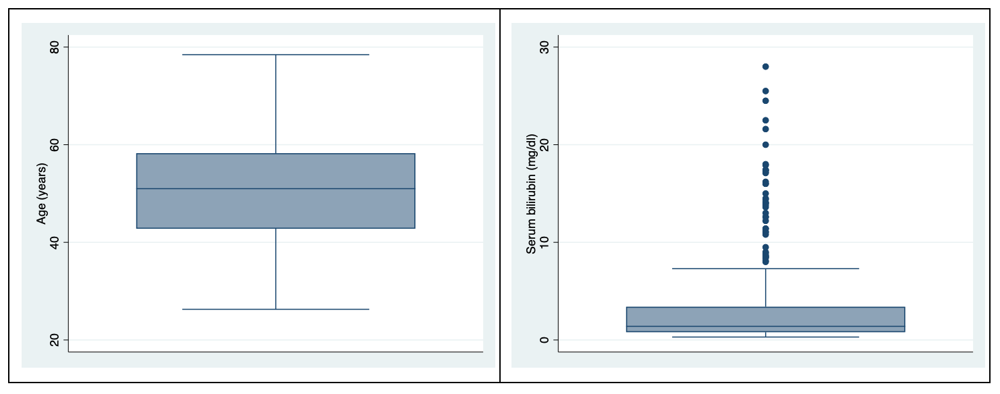
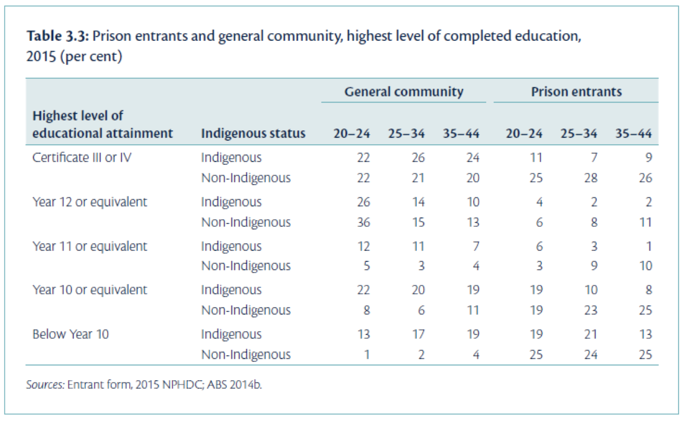
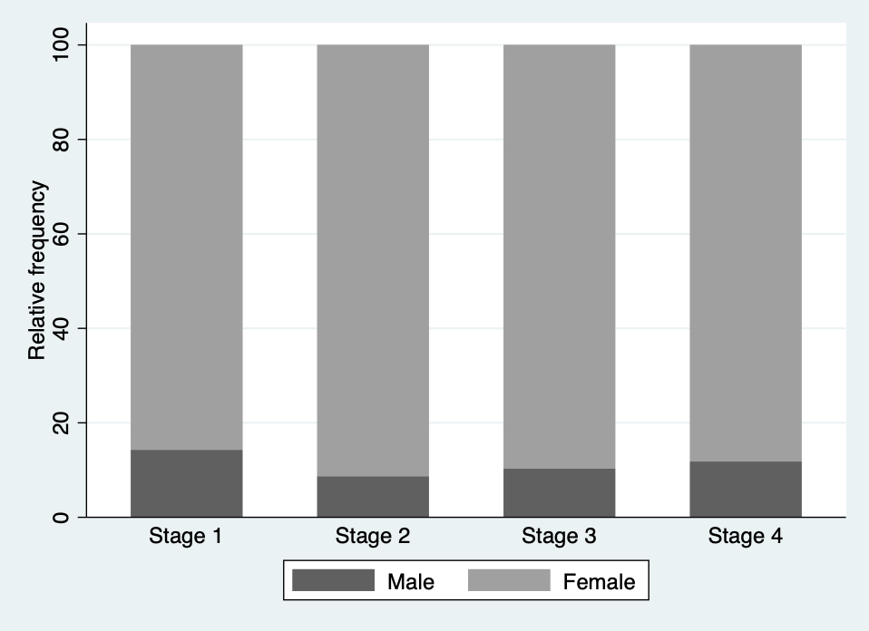
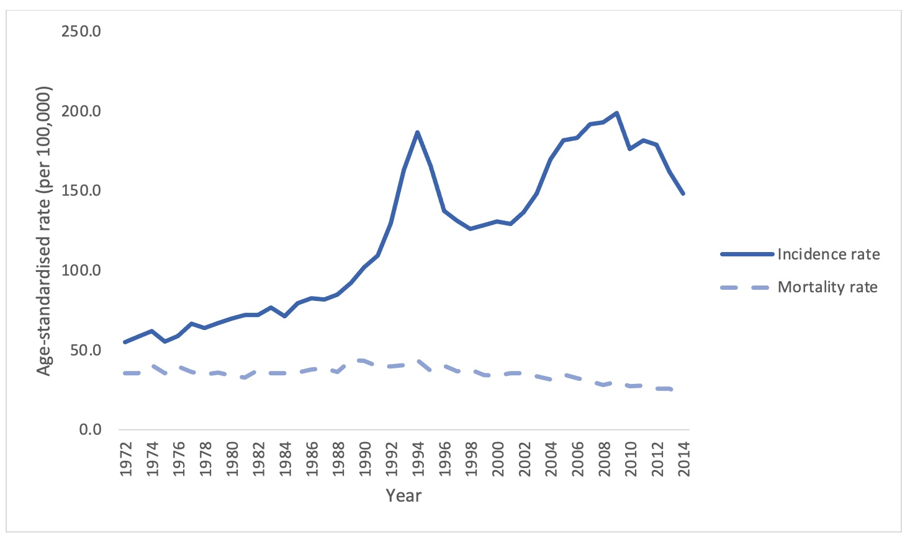

Learning objectives
By the end of this module, you will be able to:
- Understand the difference between descriptive and inferential statistics
- Distinguish between different types of variables
- Present and report data numerically
- Present and interpret graphical summaries of data using a variety of graphs
- Compute summary statistics to describe the centre and spread of data
Optional readings
Kirkwood and Sterne (2001); Chapters 2 and 3. [UNSW Library Link]
Bland (2015); Chapter 4. [UNSW Library Link]
Acock (2010); Chapter 5.
Graphics and statistics for cardiology: designing effective tables for presentation and publication, Boers (2018) [UNSW Library Link]
Guidelines for Reporting of Figures and Tables for Clinical Research in Urology, Vickers et al. (2020) [UNSW Library Link]
2.1 An introduction to statistics
The dictionary of statistics (Upton and Cook, 2008) defines statistics simply as: “The science of collecting, displaying, and analysing data.”
Statistics is a branch of mathematics, together with theoretical/pure mathematics and applied mathematics. Within the field of statistics, there are two main divisions: mathematical statistics and applied statistics. Mathematical statistics deals with development of new methods of statistical inference and requires detailed knowledge of abstract mathematics for its implementation. Applied statistics applies the methods of mathematical statistics to specific subject areas, such as business, psychology, medicine and sociology.
Biostatistics can be considered as the “application of statistical techniques to the medical and health fields”. However, biostatistics sometimes overlaps with mathematical statistics. For instance, given a certain biostatistical problem, if the standard methods do not apply then existing methods must be modified to develop a new method.
2.1.1 Scope of Biostatistics
Research is essential in the practice of health care. Biostatistical knowledge helps health professionals in deciding whether to prescribe a new drug for the treatment of a disease or to advise a patient to give up drinking alcohol. To practice evidence-based healthcare, health professionals must keep abreast of the latest research, which requires understanding how the studies were designed, how data were collected and analysed, and how the results were interpreted. In clinical medicine, biostatistical methods are used to determine the accuracy of a measurement, the efficacy of a drug in treating a disease, in comparing different measurement techniques, assessing diagnostic tests, determining normal values, estimating prognosis and monitoring patients. Public health professionals are concerned about the administration of medical services or ensuring that an intervention program reduces exposure to certain risk factors for disease such as life-style factors (e.g. smoking, obesity) or environmental contaminants. Knowledge of biostatistics helps determine them make decisions by understanding, from research findings, whether the prevalence of a disease is increasing or whether there is a causal association between an environmental factor and a disease.
The value of biostatistics is to transform (sometimes vast amounts of) data into meaningful information, that can be used to solve problems, and then be translated into practice (i.e. to inform public health policy and decision making). When undertaking research having a biostatistician as part of a multidisciplinary team from the outset, together with scientists, clinicians, epidemiologists, healthcare specialists is vital, to ensure the validity of the research being undertaken and that information is interpreted appropriately.
2.2 Descriptive and inferential statistics
To understand the concepts of statistics, it is important to realise there are two ways of using data: one is via descriptive statistics and the other is via inferential statistics.
2.2.1 Descriptive statistics
Descriptive statistics provide a ‘picture’ of the characteristics of a population. Examples of descriptive statistics based on the population are given below.
2.2.1.1 Births
These examples on descriptive statistics consider all the births in Australia in 2019 (Australian Institute of Health and Welfare (2021)). The Australian Institute of Health and Welfare produce comprehensive reports annually on the characteristics of Australia’s mothers and babies of the most recent year of data from the National Perinatal Data Collection.
One headline from the report is “Nearly two thirds of mothers were aged between 25 and 34 years (185,958 women in 2019)”, which is accompanied by a figure illustrating the age distribution of mothers in Australia giving birth in 2019. This example shows descriptive statistics that are presented as the actual number of women giving birth in 2019, together with a comparison of age distributions across Australian states.
Further descriptive statistics provide summary information, about the average (mean) age of women giving birth in 2019 (30.8 years) and the proportion of mothers who were Indigenous (4.8%).
2.2.1.2 Deaths
In another example, consider characteristics of all the deaths in Australia in 2020 (Australian Bureau of Statistics (2021)).
“During the pandemic many countries saw a change in mortality patterns, including COVID-19 becoming a leading cause of death.”
The report presents the leading causes of death in 2020, comparing the age-standardised rates between 2019 and 2020:
- “The top five leading causes of death remained the same as in 2019 (Ischaemic heart disease, Dementia including Alzheimer’s disease, Cerebrovascular diseases, Lung cancer and Chronic lower respiratory diseases).
- The age-standardised death rate decreased for all top five leading causes of death from 2019.
- Deaths due to chronic lower respiratory diseases (including emphysema) had the highest proportional rate decrease from 2019 at 17.8%.
- The reduction in acute respiratory conditions such as pneumonia contributed to a decrease in the top five leading causes of death.
- All top five leading causes of death are non-communicable diseases (they are not passed from person to person).”
The information was also presented as a visualisation / infographic, demonstrating a simplistic, yet valuable way of presenting data and enabling rates of death for 2019 and 2020.
2.2.2 Inferential statistics
Inferential statistics use data collected from a sample of the population, to make conclusions (inferences) about the whole population (that the sample was drawn from).
The following example is about a sample of prisoners, from the National Prisoner Health Data Collection (NPHDC). The NPHDC is the main source of national data about the health of prisoners in Australia. It gathers information over a 2-week period from prison entrants, dischargees, prisoners visiting the prison health clinic, and prisoners taking prescribed medication.
We have information about the population of prisoners, given as the number of prisoners in Australia’s prisons from the ABS website:
At 30 June 2015: There were 36,134 prisoners in Australian prisons, an increase of 7% (2,345 prisoners) from 30 June 2014.
Characteristics (sex, age group and Indigenous status) of the sample of prisoners from the NPHDC are given in the following table. We can use this information to make inferences about the whole population of prisoners that the sample was drawn from.

2.3 What are data?
According to the Australian Bureau of Statistics, “data are measurements or observations that are collected as a source of information”.1 Note that technically, the word data is a plural noun. This may sound a little odd, but it means that we say “data are …” when discussing a set of measurements.
Other definitions that we use in this course are:
- observation, (or record, or unit record): one individual in the population being studied
- variable: a characteristic of an individual being measured. For example, height, weight, eye colour, income, country of birth are all types of variables.
- dataset: the complete collection of all observations
2.3.1 Types of varaibles
We can categorise variables into two main types: numeric or categorical.
Numerical variables (also called quantitative variables) comprise data that must be represented by a number, which can be either measured or counted.
Continuous variables can take any value within a defined range.
For example, age, height, weight or blood pressure, are continuous variables because we can make any divisions we want on them, and they can be measured as small as the instrument allows. As an illustration, if two people have the same blood pressure measured to the nearest millimetre of mercury, we may get a difference between them if the blood pressure is measured to the nearest tenth of millimetre. If they are still the same (to the nearest tenth of a millimetre), we can measure them with even finer gradations until we can see a difference.
Discrete variables can only take one of a distinct set of values (usually whole numbers). For discrete variables, observations are based on a quantity where both ordering and magnitude are important, such that numbers represent actual measurable quantities rather than mere labels.
For example, the number of cancer cases in a specified area emerging over a certain period, the number of motorbike accidents in Sydney, the number of times a woman has given birth, the number of beds in a hospital are all discrete variables. Notice that a natural ordering exists among the data points, that is, a hospital with 100 beds has more beds than a hospital with 75 beds. Moreover, a difference between 40 and 50 beds is the same as the difference between 80 and 90 beds.
Categorical variables comprise data that describe a ‘quality’ or ‘characteristic’. Categorical variables, sometimes called qualitative variables, do not have measurable numeric values. Categorical variables can be nominal or ordinal.
A nominal variable consists of unordered categories. For example, gender, race, ethnic group, religion, eye colour etc. Both the order and magnitude of a nominal variable are unimportant.
If a nominal variable takes on one of two distinct categories, such as black or white then it is called a binary or dichotomous variable. Other examples would be smoker or non-smoker; exposed to arsenic or not exposed.
A nominal variable can also have more than two categories, such as blood group, with categories of: Group A, Group B, Group AB and Group O.
Ordinal varaibles consist of ordered categories where differences between categories are important, such as socioeconomic status (low, medium, high) or student evaluation rating could be classified according to their level of satisfaction: (highly satisfied, satisfied and unsatisfied). Here a natural order exists among the categories.
Note that categorical variables are often stored in data sets using numbers to represent categories. However, this is for convenience only, and these variable must not be analysed as if they were numeric variables.
2.4 Presenting data
We will now look at ways to summarise and present data. The choice of presentation will depend on the type of variable being summarised. We will use the dataset based on a study into primary biliary cholangitis (PBC) from the Introduction to Stata or Introduction to R exercise to demonstrate the appropriate ways to summarise and present data.
2.4.1 Summarising a single categorical variable numerically
Categorical data are best summarised using a frequency table, where each category is summarised by its frequency: the count of the number of individuals in each category. The relative frequency (the frequency expressed as a proportion or percentage of the total frequency) is usually included give further insight.
| Sex | Frequency | Relative frequency (%) |
|---|---|---|
| Male | 44 | 10.5 |
| Female | 374 | 89.5 |
It is sometimes useful to present the cumulative relative frequency, which shows the relative frequency of individuals in a certain category or below (for example, Table 2.2).
| Stage * | Frequency | Relative frequency (%) | Cumulative relative frequency (%) |
|---|---|---|---|
| 1 | 21 | 5.1 | 5.1 |
| 2 | 92 | 22.3 | 27.4 |
| 3 | 155 | 37.6 | 65.0 |
| 4 | 144 | 35.0 | 100.0 |
| * Disease stage was missing for 6 participants | |||
From Table 2.2, we can see that 65.0% of participants had Stage 3 disease or lower.
2.4.2 Summarising a single categorical variable graphically
A categorical variable is best summarised graphically using a bar chart. For example, we can present the distribution of Stage of Disease graphically using a bar graph (Figure 2.3). Bar graphs, which are suitable for plotting discrete or categorical variables, are defined by the fact that the bars do not touch.

Pie charts can be an alternative way to summarise a categorical variable graphically, however their use is not recommended for the following reasons:
- Not ideal when there are many categories to compare
- The use of percentages is not appropriate when the sample size is small
- Can be misleading by using different size pies, different rotations and different colours to draw attention to specific groups
- 3D and exploding bar charts further distort the effect of perspective and may confuse the reader
Pie charts will not be discussed further in this course.
2.4.3 Summarising a single continuous variable numerically
When summarising continuous data numerically, there are two things we want to know:
- What is the average value? And,
- How variable (or spread out) are the data?
We will use a sample of 35 ages (in whole years) to illustrate how to calculate the average value and measures of variability:
59 41 44 43 31 47 53 59 35 60 54 61 67 52 43 46 39 69 50 64 57 39 54 50 51 31 48 49 70 44 60 51 37 53 34
2.4.3.1 Measures of central tendency
2.4.3.2 Mean
The most commonly used measure of the central tendency of the data is the mean, calculated as:
\[\bar{x} = \frac{\sum x}{n}\]
From the age example: \(\bar{x}\) = 1745/35 = 49.9. Thus, the mean age of this sample is 49.9 years.
2.4.3.3 Median
Other measures of central tendency include the median and mode. The median is the middle value of the data, the value at which half of the measurements lie above it and half of the measurements lie below it.
To estimate the median, the data are ordered from the lowest to highest values, and the middle value is used. If the middle value is between two data points (if there are an even number of observations), the median is an average of the two values.
Using our example, we could rank the ages from smallest to largest, and locate the middle value (which has been bolded):
31 31 34 35 37 39 39 41 43 43 44 44 46 47 48 49 50 50 51 51 52 53 53 54 54 57 59 59 60 60 61 64 67 69 70
Here, the median is estimated as 50 years.
Note that, in practice, the median is usually calculated by software automatically, and there is no need to rank our data.
2.4.3.4 Describing the spread of the data
In addition to measuring the centre of the data, we also need an estimate of the variability, or spread, of the data points.
2.4.3.5 Range
The absolute measure of the spread of the data is the range, that is the difference between the highest and lowest values in the dataset.
Range = highest data value – lowest data value
Using the age example, Range = 70 - 31 = 39 years.
The range is most usefully reported as the actual lowest and highest values e.g. Range: 31 to 70 years.
The range is not always ideal as it only describes the extreme values, without considering how the bulk of the data is distributed between them.
2.4.3.6 Variance and standard deviation
More useful statistics to describe the spread of the data around a mean value are the variance and standard deviation. These measures of variability depend on the difference between individual observations and the mean value (deviations). If all values are equal to the mean there would be no variability at all, all deviations would be zero; conversely large deviations indicate greater variability.
One way of combining deviations in a single measure is to first square the deviations and then average the squares. Squaring is done because we are equally interested in negative deviations and positive deviations; if we averaged without squaring, negative and positive deviations would ‘cancel out’. This measure is called the variance of the set of observations. It is ‘the average squared deviation from the mean’. Because the variance is in ‘square’ units and not in the units of the measurement, a second measure is derived by taking the square root of the variance. This is the standard deviation (SD), and is the most commonly used measure of variability in practice, as it is a more intuitive interpretation since it is in the same units as the units of measurement.
The formula for the variance of a sample (\(s^2\)) is:
\[ s^2 = \frac{\sum(x - \bar{x})^2}{n-1} \]
Note that the deviations are first squared before they are summed to remove the negative values; once summed they are divided by the sample size minus 1.
The sample standard deviation is the square root of the of the sample variance:
\[s = \sqrt{s^2}\] For the age example, we would calculate the sample variance using statistical software. The sample standard deviation is estimated as: \(s = 10.47 \text{ years}\).
Characteristics of the standard deviation - It is affected by every measurement - It is in the same units as the measurements - It can be converted to measures of precision (standard error and 95% confidence intervals) (Module 3)
2.4.3.7 Interquartile range
The inter-quartile range (IQR) describes the range of measurements in the central 50% of values lie. This is estimated by calculating the values that cut the data at the bottom 25% and top 25%. The IQR is the preferred measure of spread when the median has been used to describe central tendency.
In the age example, the IQR is estimated as 43 to 59 years. Note that R and Stata use slightly different methods to calculate the interquartile range (Stata IQR: 43 to 59 years; R IQR: 43 to 58 years). This difference is not important, and either range would be considered correct.
2.4.3.8 Population values: mean, variance and standard deviation
The examples above show how the sample mean, range, variance and standard deviation are calculated from the sample of ages from 35 people. If we had information on the age of the entire population that the sample was drawn from, we could calculate all the summary statistics described above (for the sample) for the population.
The equation for calculating the population mean is the same as that of sample mean, though now we denote the population mean as \(\mu\):
\[ \mu = \frac{\sum{x}}{N} \]
Where \(\sum{x}\) represents the sum of the values in the population, and \(N\) represents the total number of measurements in the population.
To calculate the population variance (\(\sigma^2\)) and standard deviation(\(\sigma\)), we use a slightly modified version of the equation for \(s^2\):
\[ \sigma^2 = \frac{\sum(x - \mu)^2}{N} \]
with a population standard deviation of: \(\sigma = \sqrt{\sigma^2}\).
In practice, we rarely have the information for the entire population to be able to calculate the population mean and standard deviation. Theoretically, however, these statistics are important for two main purposes:
- the characteristics of the normal distribution (the most important probability distribution discussed in later modules) are defined by the population mean and standard deviation;
- while calculating sample sizes (discussed in later modules) we need information about the population standard deviation, which is usually obtained from the existing literature.
2.4.4 Summarising a single continuous variable graphically
As well as calculating measures of central tendency and spread to describe the characteristics of the data, a graphical plot is very helpful to better understand the characteristics and distribution of the measurements obtained. Histograms and box plots are excellent ways to graphically display continuous data.
2.4.4.1 Frequency histograms
A histogram that plots the frequency of the grouped observations is called a frequency histogram. Some features of a frequency histogram:
- The area under each rectangle is proportional to the frequency
- The rectangles are drawn without gaps between them (unlike a bar graph)
- The data are ‘binned’ into discrete intervals (of (usually of equal width)
If the rectangles are symmetrically distributed about the middle of the histogram, we say that the data are symmetric, and the mean and median will be approximately equal.
If the histogram has a longer tail to the right, then the data are said to be positively skewed (or skewed to the right), and the mean will be greater than the median.
If the histogram has an extended tail to the left, then the data are negatively skewed (or skewed to the left) and the mean will be smaller than the median.
The skewness of a distribution is defined by the location of the longer tail, not the location of the peak of the data.
Figure 2.4 presents two histograms from the PBC data from the Introduction to Stata exercise: for age and serum bilirubin. We can see that the distribution for age is roughly symmetric, while the distribution for serum bilirubin is highly positively skewed (or skewed to the right).

A slight variation on the frequency histogram is the density histogram, which plots the density on the y-axis. The density is a technical term, which is similar to the relative frequency, but is scaled so that the sum of the area of the bars is equal to 1.
Both the frequency and density histograms are useful for understanding how the data is distributed across the range of values. Taller bars indicate regions where the data is more densely concentrated, while shorter bars represent areas with fewer data points.
2.4.4.2 Boxplots
Another useful way to inspect the distribution of data is by using a box plot. In a box plot:
- the line across the box shows the median value
- the limits of the box show the 25-75% range (i.e. the inter-quartile range (IQR) where the middle 50% of the data lie)
- the bars (or whiskers) indicate the most extreme values (highest and lowest) that fall within 1.5 times the interquartile range from each end of the box
- the upper whisker is the highest value falling within 75th percentile plus 1.5 × IQR
- the lower whisker is the lowest value falling within 25th percentile minus 1.5 × IQR
- any values in the dataset lying outside the whiskers are plotted individually.
If the data are symmetric, the line across the box (the median value) will be in the centre of the box, and the tails will be roughly equal.
Figure 2.5 presents two boxplots from the PBC data: for age and serum bilirubin. We can see that the boxplot for age has roughly equal tails, and the median (the horizontal line) lies roughly in the middle of the interquartile range (the shaded box). It would be reasonable to assume that age follows a symmetric distribution from this plot. The boxplot for serum bilirubin shows a much longer upper tail, and a median much closer to the bottom of the shaded box than the middle. The boxplot also shows a number of points above the 75th percentile plus 1.5 × IQR. As the upper tail is longer than the lower tail, this distribution is positively skewed.

##**##
2.4.5 Summarising two categorical variables numerically
So far, we have discussed one-way frequency tables, that is, tables that summarise one variable. We can summarise more than two categorical variables in a table – called a cross tabulation, or a two-way (summarising two variables) table.
Using our PBC data, we can summarise the two categorical variables: sex and stage of disease. The two-way table of frequencies is shown in Table 2.3.
FALSE observations with missing data have been removed.Stage | |||||
|---|---|---|---|---|---|
1 | 2 | 3 | 4 | Total | |
| Sex | |||||
| Male | 3 | 8 | 16 | 17 | 44 |
| Female | 18 | 84 | 139 | 127 | 368 |
| Total | 21 | 92 | 155 | 144 | 412 |
| *Stage of disease was missing for 6 participants | |||||
FALSE observations with missing data have been removed.Stage | |||||
|---|---|---|---|---|---|
1 | 2 | 3 | 4 | Total | |
| Sex | |||||
| Male | 3 (14%) | 8 (9%) | 16 (10%) | 17 (12%) | 44 (11%) |
| Female | 18 (86%) | 84 (91%) | 139 (90%) | 127 (88%) | 368 (89%) |
| Total | 21 (100%) | 92 (100%) | 155 (100%) | 144 (100%) | 412 (100%) |
| *Stage of disease was missing for 6 participants | |||||
Stage | |||||
|---|---|---|---|---|---|
1 | 2 | 3 | 4 | Total | |
| Sex | |||||
| Male | 3 (7%) | 8 (18%) | 16 (36%) | 17 (39%) | 44 (100%) |
| Female | 18 (5%) | 84 (23%) | 139 (38%) | 127 (35%) | 368 (100%) |
| Total | 21 (5%) | 92 (22%) | 155 (38%) | 144 (35%) | 412 (100%) |
| *Stage of disease was missing for 6 participants | |||||
2.4.5.1 Tables containing more than two variables
It is possible to construct multi-way tables that summarise more than two categorical variables in a single table. However, tables can become complex when more than two variables are incorporated, and you may need to present the information as two tables or incorporate additional rows and columns.
In Figure 2.2, characteristics of the sample of prisoners from the NPHDC were presented. This table contains information about sex, age group and Indigenous status from different groups of prisoners; prison entrants, discharges, and prisoners in custody. This type of condensed information is often found in reports and journal articles giving demographic information, by different groups considered in the study.
We might also consider a table containing further pieces of information. The table presented in Figure 2.6 (from the health of Australia’s prisoners 2015 report) compares prison entrants and the general community by three variables: age group, Indigenous status, and highest level of completed education.
Can you see any issues with the presentation of this table?

Source: Australian Institute of Health and Welfare 2015. The health of Australia’s prisoners 2015. Cat. no. PHE 207. Canberra: AIHW.
Some issues in this table:
- The title of the table does not contain full information about the variables in the table;
- It is unclear how the percentages were calculated (which groupings added to 100%);
- The ages are not labelled as such, thus without reading the text in report it is unclear that these are age groupings.
2.4.6 Table presentation guidelines (Woodward, 2013)
- Each table (and figure) should be self-explanatory, i.e. the reader should be able to understand it without reference to the text in the body of the report.
- This can be achieved by using complete, meaningful labels for the rows and columns and giving a complete, meaningful title.
- Footnotes can be used to enhance the explanation.
- Units of the variables (and if needed, method of calculation or derivation) should be given and missing records should be noted (e.g. in a footnote).
- A table should be visually uncluttered.
- Avoid use of vertical lines.
- Horizontal lines should not be used in every single row, but they can be used to group parts of the table.
- Sensible use of white space also helps enormously; use equal spacing except where large spaces are left to separate distinct parts of the table.
- Different typefaces (or fonts) may be used to provide discrimination, e.g. use of bold type and/or italics.
- The rows and columns of each table should be arranged in a natural order to help interpretation. For instance, when rows are ordered by the size of the numbers they contain for a nominal variable, it is immediately obvious where relatively big and small contributions come from.
- Tables should have a consistent appearance throughout the report so that the paper is easy to follow (and also for an aesthetic appearance). Conventions for labelling and ordering should be the same (for both tables as well as figures) for ease of comparison of different tables (and figures).
- Consider if there is a particular table orientation that makes a table easier to read.
Given the different possible formats of tables and their complexity, some further guidelines are given in the following excellent references:
2.5 Graphical presentation
2.5.1 Bar graphs
Information from more than one variable can be presented as clustered or multiple bar chart (bars side-by-side) (Figure 2.7). This type of graph is useful when examining changes in the categories separately, but also comparing the grouping variable between the main bar variable. Here we can see that Stage 3 and Stage 4 disease is the most common for both males and females, but there are many more females within each stage of disease.

An alternative bar graph is a stacked or composite bar graph, which retains the overall height for each category, but differentiates the bars by another variable (Figure 2.8).

Finally, a stacked relative bar chart (Figure 2.9) displays the proportion of grouping variable for each bar, where each overall bar represents 100%. These graphs allow the reader to compare the proportions between categories. We can easily see from Figure 2.9 that the distribution of sex is similar across each stage of disease.

2.5.2 Line graphs
A line graph is effective to illustrate trends over time (e.g. change over several years). Let’s look at an example from cancer epidemiology.
Cancer incidence is the number of new cases of cancer diagnosed in a population in a given time period. A useful comparison with the incidence rate is the mortality rate, revealing information about the deaths from cancer in the same period. Figure 2.10 shows the prostate cancer trend in the NSW male population in the period 1972-2014, specifically the age-standardised incidence and mortality rate per 100,000.

Source: The Cancer Institute NSW (2018) Cancer statistics NSW. https://www.cancer.nsw.gov.au/cancer-statistics-nsw (Accessed: 24 Jan 2019).
The age standardised incidence rate for prostate cancer increased steadily in the period 1972 – 1991, from 55.2 cases per 100,00 to 109.3 cases per 100,000. There were two notable peaks in incidence in the period 1972-2014. In particular, there was an increase between 1992-1994, and also between 2002-2009. Since 2009 (to 2014) the rates decreased from 198.9 per 100,000 to 148.2 per 100,000. Whilst the incidence rate for prostate cancer has fluctuated over the period, the age standardised mortality rate remained relatively stable (around 35 deaths per 100,000). Since 2009 the mortality rate appears to be decreasing and was at its lowest in 2014 at 22.1 per 100,000.
[The increase in prostate cancer incidence in the early 1990’s occurred at a time when blood testing of men for Prostate Specific Antigen (PSA) became more widespread. The more recent peak in incidence in the early 2000’s maybe explained by PSA being increasingly used as a screening test for men who did not have symptoms of prostate cancer.]
2.5.3 Graphical presentation guidelines
Consider the following guidelines for the appropriate presentation of graphs in scientific journals and reports (Woodward, 2013).
- Figures should be self-explanatory and have consistent appearance through the report.
- A title should give complete information. Note that figure titles are usually placed below the figure, whereas for tables titles are given above the table.
- Axes should be labelled appropriately
- Units of the variables should be given in the labelling of the axes. Use footnotes to indicate any calculation or derivation of variables and to indicate missing values
- If the Y-axis has a natural origin, it should be included, or emphasised if it is not included.
- If graphs are being compared, the Y-axis should be the same across the graphs to enable fair comparison
- Columns of bar charts should be separated by a space
- Three dimensional graphs should be avoided unless the third dimension adds additional information
2.6 How to report summary statistics
When reporting summary statistics, it is important not to present results with too many decimal places. Doing so implies that your data have a higher level of precision than they do. For example, presenting a mean blood pressure of 100.2487 mmHg implies that blood pressure can be measured accurately to at least three decimal places.
There are a number of guidelines that have been written to help in the presentation of numerical data. Many of these guidelines are based on the number of decimal places, while others are based on the number of significant figures. Briefly, the number of significant figures are “the number of digits from the first non-zero digit to the last meaningful digit, irrespective of the position of the decimal point. Thus, 1.002, 10.02, 100200 (if this number is expressed to the nearest 100) all have four significant digits.” Armitage, Berry, and Matthews (2013)
A summary of these guidelines that will be used in this course appear below.
| Summary statistic | Guideline (reference) |
|---|---|
| Mean | It is usually appropriate to quote the mean to one extra decimal place compared with the raw data. (Altman) |
| Median, Interquartile range, Range | As medians, interquartile ranges and ranges are based on individual data points, these values should be presented with the same precision as the original data. |
| Percentage | Percentages do not need to be given with more than one decimal place at most. When the sample size is less than 100, no decimal places should be given. (Altman) |
| Standard deviation | The standard deviation should usually be given to the same accuracy as the mean, or with one extra decimal place. (Altman) |
| Standard error | As per standard deviation |
| Confidence interval | Use the same rule as for the corresponding effect size (be it mean, percentage, mean difference, regression coefficient, correlation coefficient or risk ratio) (Cole) |
| Test statistic | Test statistics should not be presented with more than two decimal places. |
| P-value | Report p values to a single significant figure unless the p value is close to 0.05 (say, 0.01 – 0.2), in which case, report two significant figures. Do not report `not significant` for p values of 0.05 or higher. Very low p values can be reported as p < 0.001 or similar. A p value can indeed be 1, although some investigators prefer to report this as >0.9. (Assel) |
| Difference in means | As for the estimated means |
| Difference in proportions | As for the estimated proportions |
| Odds ratio / Relative risk | Hazard and odds ratios are normally reported to two decimal places, although this can be avoided for high odds ratios (Assel) |
| Correlation coefficient | One or two decimal places, or more when very close to ±1 (Cole) |
| Regression coefficient | Use one more significant figure than the underlying data (adapted from Cole) |
Sources:
Altman (1990)
Cole (2015)
Assel et al. (2019)
2.6.1 Mathematical and statistical notation
When computing summary statistics or using more formal statistical methods, mathematical and statistical notation is often used. Below are some of the common statistical terms and interpretation that will be used in the course and which are seen in many text books.
| Notation | Interpretation |
|---|---|
| \(x\) | An observation in your sample |
| \(\sum x\) | Sum of all the observations |
| \(N\) | Total population size |
| \(n\) | Sample size |
| \(\mu\) (mu) | Population mean |
| \(\sigma^2\) | Population variance |
| \(\sigma\) | Population standard deviation |
| \(\bar{x}\) | Sample mean |
| \(s^2\) | Sample variance |
| \(s\) | Sample standard deviation |
https://www.abs.gov.au/statistics/understanding-statistics/statistical-terms-and-concepts/data↩︎